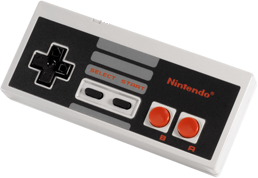

Piano Roll

Рабочее пространство Тасэдитора похоже на интерфейс большинства программ для написания музыки – Piano Roll (перфолента). Piano Roll представляет из себя таблицу, содержащую самые важные данные о редактируемом проекте. Пользователь может не только просматривать эти данные, но и редактировать их с помощью щелчков мыши по клеткам таблицы.
При первом открытии Тасэдитора вы, скорее всего, увидите пустой проект, содержащий лишь стартовый (нулевой) кадр мувика. Поэтому перед началом экспериментов нужно временно отключить паузу эмуляции, чтобы мувик дошёл хотя бы до титульного экрана игры, где уже можно воздействовать на игру с помощью Ввода. По умолчанию для управления паузой эмулятора служит клавиша Pause на клавиатуре, но в Тасэдиторе вы можете использовать вместо неё среднюю кнопку мыши (колесо). Попробуйте просмотреть запущенную видеоигру пару секунд, затем вновь нажмите Pause или среднюю кнопку мыши, чтобы остановить эмулятор.
Во время эмуляции содержимое Piano Roll заполняется информацией о пройденных кадрах. Каждая строка Списка Piano Roll отвечает за один кадр. Порядковый номер этого кадра указан в начале каждой строки, нумерация идёт сверху вниз. Когда экранных размеров не хватает для отображения всех кадров мувика, у Списка появляется вертикальный скроллбар.
По цвету каждой строки можно узнать информацию о соответствующем кадре:
Чтобы добавлять и изменять Ввод мувика, щёлкайте мышкой по клеткам в столбцах, находящихся правее столбика с номерами кадров. Если щёлкнуть по пустой клетке, то на ней появится символ, соответствующий кнопке реального джойстика эмулируемой приставки (NES).
A – кнопка A B – кнопка B S – кнопка Select T – кнопка Start U – крестовина Вверх D – крестовина Вниз L – крестовина Влево R – крестовина Вправо |
 |
Если щёлкнуть по уже занятой клетке, то она очистится, и соответствующая кнопка будет считаться отпущенной на этом кадре. Других состояний у кнопок нет – только эти два: либо нажата, либо отпущена.
Поначалу может быть не очень привычно соотносить эти 8 символов с упругими кнопками реального джойстика, но попробуйте просто нажимать в Тасэдиторе клавиши, настроенные в эмуляторе на джойстик первого игрока. Во время нажатия кнопок будут загораться зелёным светом соответствующие буквы в Заголовке Piano Roll, и вы легко ассоциируете столбцы Piano Roll с кнопками геймпада.
Основная часть времени в Тасэдиторе проходит именно за этим занятием – установкой и снятием нажатий кнопок на разных кадрах. Тем самым вы формируете последовательность состояний кнопок, которая передаётся в игру и отражается на действиях управляемого персонажа. Например, если в Super Mario Bros посреди игрового процесса поставить в одну клетку Piano Roll один символ "A", Марио сделает маленький прыжок (произошло короткое нажатие кнопки A). Если же поставить несколько символов "A" подряд (в столбик), Марио сделает большой прыжок (длительное зажатие кнопки A).
Каждый раз, когда вы изменяете Ввод выше строки, в которой стоит Курсор Проигрывателя, голубой курсор отступает назад (назад по мувику = вверх по Piano Roll), при этом очищая часть Гринзоны. Это происходит в связи с тем, что ваши изменения Ввода ведут к изменениям хода игровых событий, так что ранее запомненное в Гринзоне состояние игры становится не актуальным. После изменения Ввода вам необходимо будет снова проиграть несколько кадров мувика – то есть либо снять на время паузу эмулятора, либо схватить Курсор Проигрывателя за треугольную стрелку и перетащить вниз до интересующего кадра. При этом вы увидите на экране FCEUX результаты модификации Ввода, а заодно восстановите часть Гринзоны.
Кроме того, вы ещё можете зажать правую кнопку мыши и покрутить колесо мыши вниз, чтобы вручную довести Курсор Проигрывателя к нужному кадру. Управление колесом является самым отзывчивым способом навигации по малому участку мувика. Задействуется только одна рука, и при этом курсор мыши может находиться где угодно, например, оставаться над клетками редактируемого Ввода. Попробуйте, это очень эффективный способ перемотки назад и вперёд. Удобно зажимать средним пальцем правую кнопку мыши, а указательным вращать колесо, не отрывая взгляд от экрана FCEUX.
Помимо одиночных щелчков по клеткам Piano Roll можно также менять состояние кнопок сразу в нескольких кадрах. Например, если вы хотите, чтобы кнопка R (Вправо) была зажата на протяжении 20 кадров подряд, не обязательно 20 раз щёлкать по соответствующим клеткам Piano Roll сверху вниз. Достаточно щёлкнуть по начальному кадру избранного участка и, не отпуская левую кнопку мыши, переместить курсор мыши вверх или вниз – при движении курсор мыши будет оставлять за собой след, и таким образом вы нарисуете вертикальный ряд нажатий. Аналогично можно быстро стереть несколько нажатий, щёлкнув по первому удаляемому символу и переместив "ластик" выше или ниже. Стирание начинается при щелчке по заполненной клетке Ввода, а при щелчке по пустой клетке начинается рисование.
Кроме этого, можно также зажать клавишу Shift перед щелчком по Вводу, чтобы распространить влияние этого щелчка на все кадры между точкой щелчка и Курсором Выделения. Например, вы можете сначала поставить "R" в начальном кадре, потом проскроллировать Piano Roll до конца, зажать Shift и поставить "R" в конечном кадре – нажатия кнопки R появятся во всех кадрах.

Существует ещё один способ массовой установки и снятия нажатий. Сначала выделите несколько строк, например, пятую, десятую и двадцатую (для этого нужно зажать Ctrl и щёлкнуть по номерам 0000005, 0000010, 0000020). Затем щёлкните по букве "L" в Заголовке Piano Roll. Если на выделенных кадрах не было нажатий кнопки L (Влево), то они там появятся. Если же во всех выделенных кадрах кнопка L уже проставлена, щелчок по Заголовку очистит эти нажатия.
Позже вы освоите ещё несколько приёмов редактирования Ввода, но это основные из них. Поначалу может показаться, что слишком неестественно рисовать кнопочные нажатия мышкой, вместо того чтобы симулировать их нажатиями клавиш на клавиатуре. Однако это чувство дискомфорта вскоре пройдёт, если вы посвятите Тасэдитору несколько дней.
При рисовании Ввода вы, должно быть, заметили, что ранее установленные нажатия (буквы) различаются по цвету, и по мере добавления новых кнопок старые меняют свой цвет от оранжевого к фиолетовому и синему, пока не становятся стандартно-чёрными. Это одна из экспериментальных фич Тасэдитора под названием "Горячие Правки" (Hot Changes). Она создана для ненавязчивого повышения осведомлённости ТАСера о недавних правках. Каждый раз, когда вы вносите изменения в Ввод мувика, самые последние нажатия отображаются наиболее горячим цветом (ярко-оранжевым), а все предыдущие правки остывают на одну степень, становясь менее яркими.
Благодаря расцветке вы всегда можете по беглому взгляду на Piano Roll догадаться, какие нажатия были установлены недавно, а какие давно. Кроме того, вы сможете увидеть, какие нажатия были недавно удалены (на их месте остаётся чёрточка).
Если эта фича вам не нравится, вы сможете её потом отключить, однако в рамках учебного курса мы будем подразумевать, что "горячие правки" у вас подключены.
Узкая колонка перед колонкой с номерами кадров служит не только для перетаскивания Курсора Проигрывателя. В ней ещё отображаются информационные иконки. Голубая стрелка в этом столбце всегда указывает на кадр, где находится Курсор Проигрывателя. Зелёная стрелка показывает место, где находился Курсор Проигрывателя до того, как над ним изменился Ввод. А цифровыми карточками в этой колонке обозначаются Закладки, о них будет рассказано чуть позже.
Жёлтые отметки на номерах некоторых кадров (на картинке это кадры 12 и 22) называются Маркерами. Помимо жёлтого цвета о наличии Маркера на этих кадрах говорит и широкий шрифт, которым напечатан номер кадра.
Маркеры предназначены для облегчения навигации по мувику, а также для самоорганизации ТАСера. Вы сами выбираете принцип их использования: можете ставить их на начало каждого уровня игры, а можете ставить и на каждый прыжок, выстрел или другое игровое событие. По сути, с помощью установки Маркеров вы логически разбиваете свой мувик на блоки, и потом вы сможете перемещаться по мувику не только от кадра к кадру, но и от блока к блоку. Это позволяет вам видеть мувик на более высоком уровне абстракции.
Структуризация помогает держать в голове более чёткий образ всего мувика. Такой мысленный образ существует в голове у каждого ТАСера, но обычно он весьма расплывчатый – мы помним примерную последовательность действий, но не помним детали (зачастую это и не требуется). Когда ТАСер выключает эмулятор, образ начинает постепенно забываться, становится всё более расплывчатым. Поэтому при следующем включении обычно требуется просмотреть текущий мувик с начала, чтобы освежить воспоминания, отметить в уме ключевые моменты, расставить приоритеты и в целом морально подготовиться к продолжению ТАСинга. Иногда это требуется делать даже чаще – в зависимости от уровня сложности ТАСа. Поэтому рекомендуется закреплять этот образ расстановкой реальных Маркеров не в уме, а прямо в мувике.
Маркер может быть установлен на любом кадре. В отличие от Ввода, Маркеры не влияют на события игры. Есть несколько способов для установки Маркеров:
1 способ. Сделать двойной щелчок левой кнопкой мыши по номеру кадра. Если на этом кадре не было Маркера, он там появится. Если Маркер уже есть, с зажатой левой кнопкой можно перетаскивать этот Маркер куда угодно, например, переместить его на соседний кадр или вообще выбросить за пределы Piano Roll, тем самым удалив его.
2 способ. Выделить с помощью щелчков по номерам кадров одну или несколько строк в Piano Roll, а затем щёлкнуть по Заголовку Piano Roll на слово "Frame#". Если среди выделенных строк были строки без Маркеров, то на них будут установлены Маркеры. Если же все выделенные строки содержат Маркеры, все Маркеры с них будут удалены. Таким образом можно массово удалять или устанавливать Маркеры, точно так же, как Ввод.
3 способ. Выделить один или несколько кадров в Piano Roll, затем щёлкнуть правой кнопкой по любому выделенному номеру кадра и в появившемся меню выбрать пункт "Set Markers" (Установить Маркеры) или "Remove Markers" (Удалить Маркеры). Этот наименее удобный способ, вместо него рекомендуется использовать первый или второй.
Любые операции с Маркерами можно откатывать (Ctrl + Z) точно так же, как любые операции с Вводом.
Маркеры автоматически нумеруются Тасэдитором по порядку их расположения в мувике – сверху вниз от первого до последнего. В верхнем левом углу окна Тасэдитора вы можете увидеть номер Маркера, под которым в данный момент находится Курсор Проигрывателя (надпись "Marker #" голубого цвета). Эта надпись не только информирует, но и является кнопкой для автоскроллинга. Если вы оставили Курсор Проигрывателя в одной части мувика, а потом проскроллировали Piano Roll подальше от этого курсора, вы всегда можете мгновенно вернуться к голубому курсору, щёлкнув по голубой надписи "Marker" (или быстро нажав клавишу Shift дважды). Эта особенность вам неоднократно понадобится в процессе редактирования больших мувиков.
Точно такая же надпись-кнопка есть в нижнем левом углу Тасэдитора. Надпись "Marker #" синего цвета (такого же цвета, как и Курсор Выделения) показывает номер Маркера, под которым находится Выделение. При щелчке по этой надписи Piano Roll автоматически прыгает к Выделению. Эта кнопка пригодится вам так же часто, как верхняя. Её клавиатурный аналог – двойное нажатие клавиши Ctrl.
Легко запомнить, что клавиша Shift часто используется для управления Курсором Проигрывателя, а клавиша Ctrl – для Курсора Выделения.
Когда Курсор Проигрывателя и Курсор Выделения находятся под одним и тем же Маркером, номера вверху и внизу будут, естественно, совпадать.
Маркеры не только разделяют мувик на логические блоки, но и содержат текстовые записи (комментарии и рабочие заметки). Текст Заметки Маркера отображается сразу же после его номера. В верхнем текстовом поле отображается Заметка Маркера, под которым в данный момент находится Курсор Проигрывателя, а в нижнем текстовом поле отображается Заметка Маркера, под которым находится Курсор Выделения.
По умолчанию каждый новый Маркер содержит пустую Заметку. При создании Маркера двойным щелчком нижнее текстовое поле автоматически становится активным, так как Курсор Выделения указывает на кадр с только что созданным Маркером. Поэтому вы сразу же можете напечатать текст Заметки для этого Маркера, а затем продолжить работу с мувиком. Изменения текста сохранятся автоматически.
Отредактировать Заметку старого Маркера можно любым из следующих способов:
Когда вы печатаете текст Заметки, для завершения редактирования нажмите Enter или просто щёлкните мышкой по любому постороннему элементу окна TAS Editor. Если вы передумали, нажмите Esc для отмены редактирования. Все возможности редактирования Заметок перечислены в Справочнике.
Рекомендуется вводить хотя бы односложную Заметку при создании Маркеров, чтобы не забыть, зачем здесь был поставлен этот Маркер. Это не отнимет много времени, если устанавливать Маркеры двойным щелчком и вводить лаконичные сообщения в ту же секунду.
Created with the Personal Edition of HelpNDoc: Full-featured Documentation generator